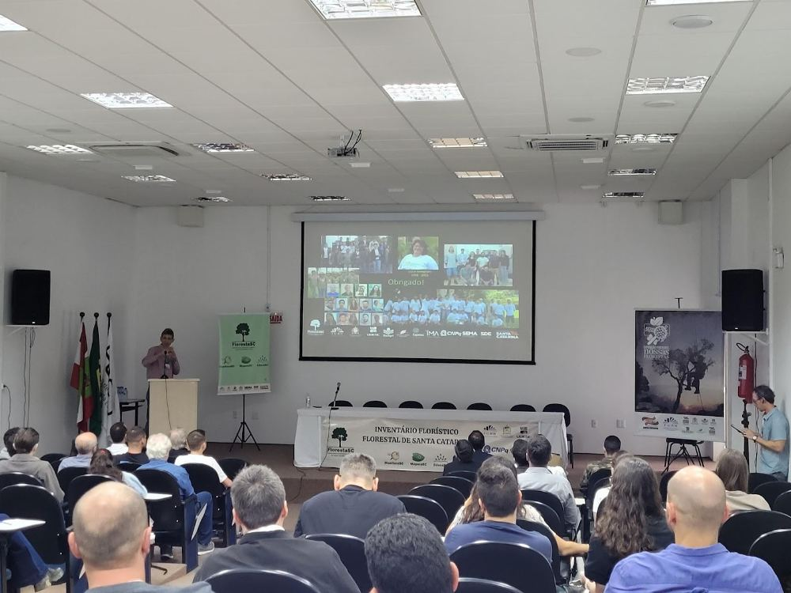
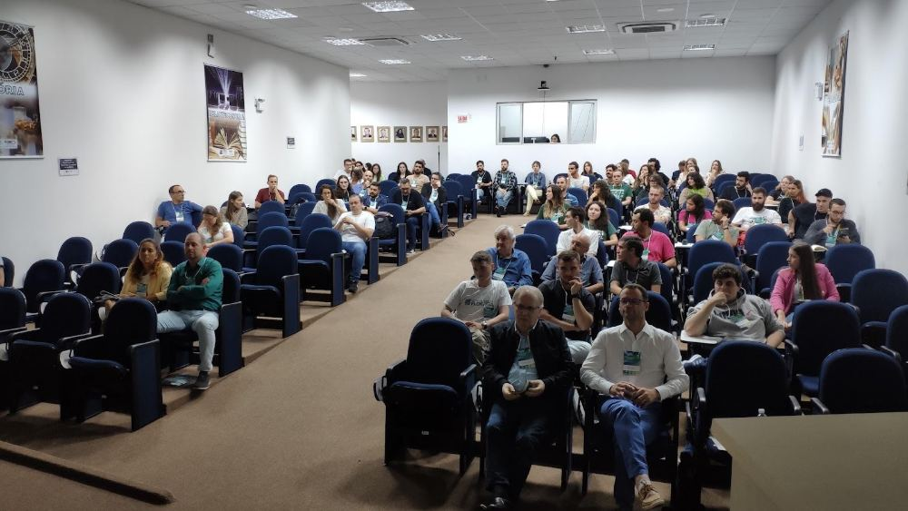
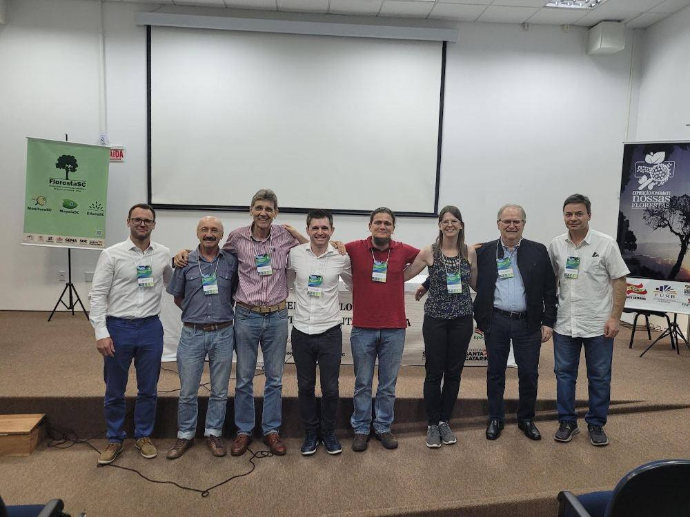
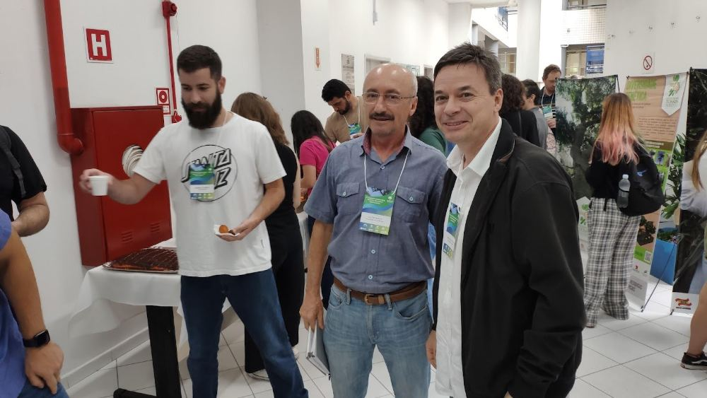
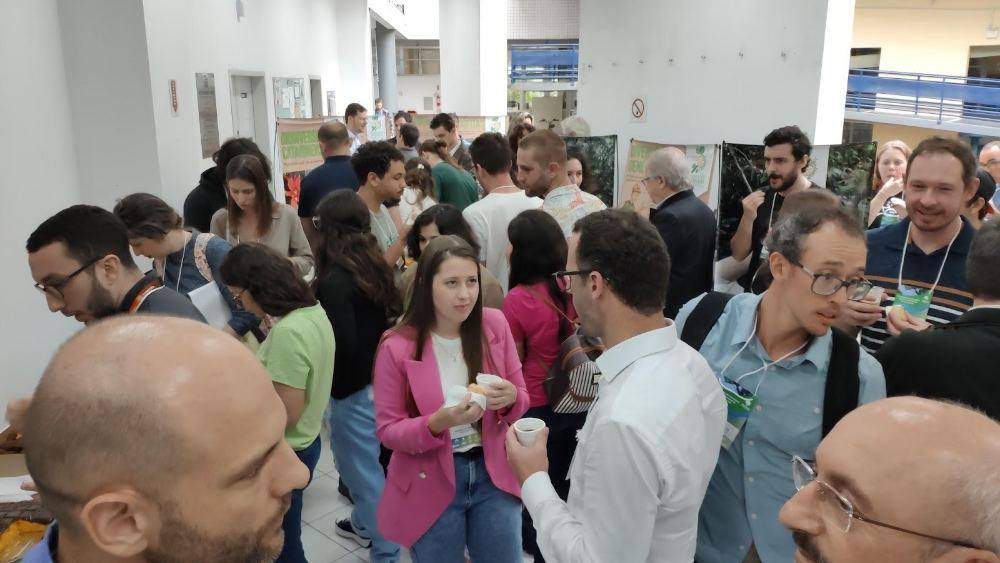
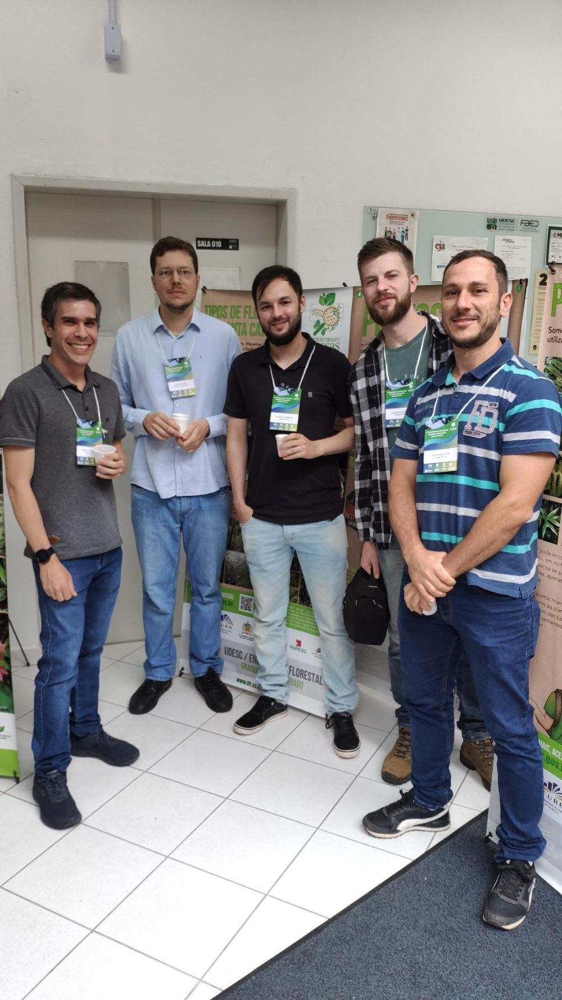
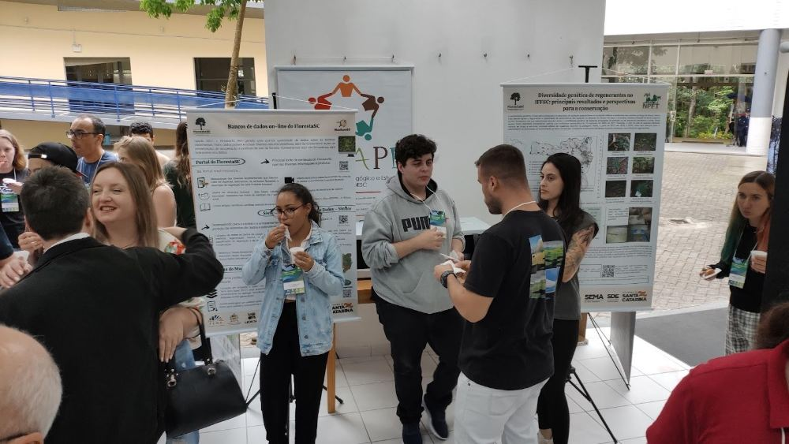
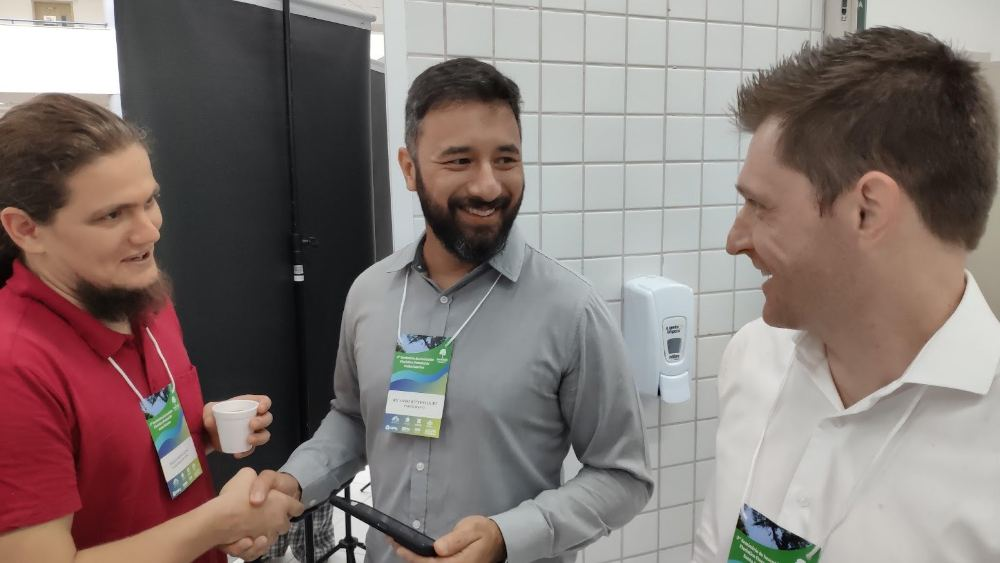
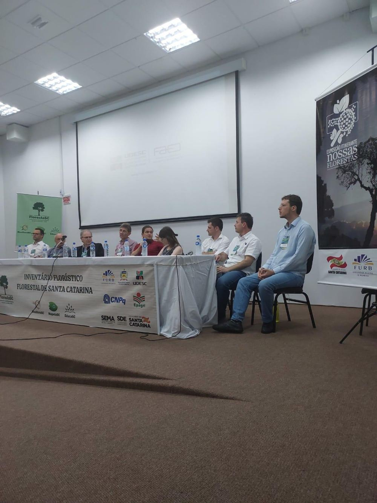

3° Seminário do IFFSC divulgou resultados do 2º Ciclo
Terça-feira, 29 de Novembro de 2022
Em 23 de novembro foi realizado o 3° Seminário do IFFSC, com objetivo de socializar os resultados das medições em 303 Unidades Amostrais do 2° Ciclo do IFFSC, realizadas entre 2014 e 2019.
No evento realizado no Auditório Tito Sena, da UDESC, foram apresentadas cinco palestras:
- IFFSC – 15 anos de pesquisa: retrospectiva e desafios (Alexander C. Vibrans);
- Mudanças na riqueza de espécies das florestas (André L. de Gasper);
- Dinâmica do estoque de carbono das florestas catarinenses (Laio Z. Oliveira);
- Dinâmica da diversidade genética em espécies arbóreas de SC (Tiago Montangna);
- Acesso aos Dados do IFFSC – como encontrar as informações nos bancos de dados on-line (Débora V. Lingner).
Galeria de imagens. Clique para passar ou retroceder as fotos.









Ao final do seminário foram discutidos, numa mesa redonda, conquistas, desafios e novas demandas do IFFSC, com participação de Tiago Mioto (SAR), Luiz Toresan (Epagri), Odelir Battistella (FIESC) e Adelar Mantovani (UDESC) e dos palestrantes.
O evento também foi transmitido ao vivo e as palestras estão disponíveis para asssistir no nosso canal do YouTube.
Começou uma nova fase de medições (2022-2027)
Sexta-feira, 9 de Setembro de 2022
No dia 29 de agosto, a nova equipe do IFFSC reuniu-se pela primeira vez planejando as ações da nova fase do Inventário Florestal Catarinense que será desenvolvida entre 2022 e 2027. Trata-se do 3º ciclo de medições de 220 Unidades Amostrais instaladas em todas as regiões de Santa Catarina.
Os trabalhos de campo começaram no dia 6 de setembro e se estendem, numa primeira campanha até maio de 2023.
Além disso, fazem parte dos objetivos do Convenio recentemente firmado entre a Secretaria de Desenvolvimento Econômico Sustentável (SDE) e a FURB:
- a ampliação do diálogo e da cooperação com órgãos estaduais, como SDE, IMA, PMA, SAR, Epagri, MPE, CONSEMA, FIESC, visando a efetiva aplicação de dados e informações gerados pelo IFFSC
- a continuação do monitoramento das extensão das florestas catarinenses, em especial no período entre 2017 e 2022
- a apresentação dos resultados do 2º ciclo de medições realizados entre 2014 e 2019
- a geração de subsídios para o uso sustentável das florestas por meio de produtos como tabelas de produção, afilamento e sortimentos, e recomendações silviculturais e de manejo de espécies de florestas secundárias de uso madeireiro e não madeireiro.
IFFSC apresenta estimativas das taxas de mudanças de atributos florestais das florestas catarinenses
Segunda-feira, 18 de Abril de 2022
O estudo publicado na revista Forest Ecology and Management é resultado de 15 anos de trabalho das equipes do IFFSC. Consideramos os resultados obtidos, uma peça chave para o entendimento da dinâmica das florestas no nosso estado, uma vez que quantificam ingresso de indivíduos jovens, incremento e mortalidade das árvores adultas nas florestas catarinenses. Pela primeira vez em florestas subtropicais e em especial, na região neotropical, uma investigação desta natureza é realizada, abrangendo uma área de cerca de 95.000 km², amostrada de forma sistemática em um grande número (303) de parcelas localizadas nas interseções de uma grade de 10 x 10 km.
Desta forma, foi possível computar estimativas consistentes e representativas das mudanças de atributos florestais como densidade (número de árvores por ha), área basal e biomassa aérea acima do solo (AGB) das três tipologias florestas de Santa Catarina, a Floresta Ombrófila Densa (FOD), a Floresta Ombrófila Mista (FOM) e a Floresta Estacional Decidual (FED). As mudanças líquidas de AGB (ingressos + incremento – mortalidade) médias estimadas variam entre 4,9 a 8,1 Mg (ou toneladas) por hectare em um período padronizado de 5 anos. Os estoques de AGB das florestas inventariadas representam, em média, um terço dos estoques de florestas maduras na região. Isto significa que o potencial de fixação de carbono dessas florestas ainda está longe de ser esgotado e que as florestas catarinenses representam um importante sumidouro de CO2 atmosférico. Acesso aqui o original do artigo e aqui um resumo em Português.
Estudo responde a uma pergunta fundamental da ecologia: Quantas espécies de árvore existem no planeta?
Quarta-feira, 23 de Fevereiro 2022
Dados do IFFSC compuseram um estudo global de grande relevância ecológica, que foi publicado nos Anais da Academia Americana de Ciências (PNAS) (https://doi.org/10.1073/pnas.2115329119) e é resultante de três anos de investigação de um grupo de pesquisadores organizado na GFBI (Iniciativa Global de Biodiversidade Florestal).
O estudo revelou que existem 73.000 espécies de árvores na Terra, sendo que destas, 9.000 espécies ainda não foram descobertas e nem descritas pela ciência. Dentre estas 9.000 espécies, é provável que um terço delas são espécies muito raras, com populações muito pequenas e presentes em áreas muito restritas. Essa descoberta evidencia a vulnerabilidade da biodiversidade florestal global frente às mudanças no uso da terra e no clima. Segundo as estimativas, a América do Sul abriga 43% do total das 73.000 espécies, a Eurásia 22%, a África 16%, a América do Norte 15% e a Oceania 11%.
Para realizar o estudo, foram utilizados dados de ocorrência e de abundância de 4,4 milhões de árvores (indivíduos), registradas em cerca de 105.000 parcelas implantadas em florestas, campos naturais, savanas e áreas com vegetação arbustiva de todos os continentes e zonas climáticas (das quais 450 parcelas do Inventário Florístico Florestal de Santa Catarina, IFFSC). Além disso, foram incluídas nos cálculos das estimativas das arvores “faltantes” (ainda não conhecidas), os dados de ocorrência de espécies contidos no banco de dados TreeChange.
O cômputo das estimativas parte de um método clássico da Ecologia Florestal, que está baseado no número de espécies extremamente raras, representadas na amostra por apenas um único ou dois indivíduos, além do número de espécies raras que ocorrem em apenas uma única ou em duas localidades (mesmo com vários indivíduos) e sua proporção relativa às espécies mais comuns ou até “hiperdominantes” (muito frequentes em determinada tipologia florestal).
A modelagem que levou à estimativa do número total de espécies foi realizada separadamente em 9.353 células de 100 x 100 km abrangendo todos os continentes e zonas climáticas. Os cálculos estatísticos complexos foram realizados envolvendo técnicas de Inteligência Artificial e o uso de um supercomputador na Purdue University (EUA).
Acompanhe também nossas redes sociais para ficar por dentro das ações do projeto.
FlorestaSC
florestasc@furb.br 47 3221-6100
Página migrada de floresta.sc.gov.br.